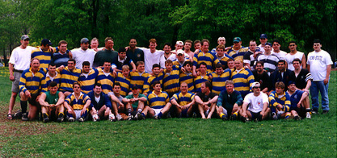

Back: Pirrone Flagg Brown Meehan Giles Gunsolus Quintieri Ryan Moran Keeler Blaser
Heltz Curtin Tubridy Briggs Gerona Terech Lane the DA Horner Rocchio Ghneim Roof
Middle: Astridge Moscato MacDonald Race Molnar Mayr Radu Agnello Pachan Urbaniak
Tomsic McDade ? ? Mochrie McChesney Gerby Carty
Front: Mistero Fasone Moran Collesano Mendler Kennedy Phillips McNelly Sion Clancy
Stickle Kowalski